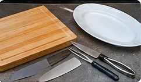
STEP 1 · VIDEO 0:05–0:10
Gather equipment
Two cutting boards, a sharp knife, a kitchen fork, tongs, and a serving platter.
Roasting at 350°F automatically. Dinner time stays fixed as a goal, but a late roast may make that goal impossible. Roasting estimates are not guarantees. Plan refrigerator thawing at roughly one day per 4–5 lb plus a cushion, and check the turkey is fully thawed before brining; avoid leaving a thawed turkey in the refrigerator for an unnecessarily long period before brining.
If something happens earlier or later, mark the milestone when it really happens. You can correct its recorded time. Completed milestones stay fixed. Late brining shortens the available brine window rather than shifting dinner. Later cooking delays may still put dinner at risk.
Original apple cider, citrus and spice flavor. Quantities below scale by brine batch size, not directly by turkey weight.
Quarter the oranges and squeeze their juice into the brine, then add the squeezed quarters and peels. Halve the lemons and squeeze them in as well. Quarter the apples and roughly chop the carrots and onion. Mince the garlic; add rosemary leaves, bay leaves, cinnamon sticks, whole cloves and black pepper. These preparation details reflect your customary orange method and practical suggestions for the other produce.
Salt baseline: 345 g Morton coarse kosher salt for the original batch, based on the likely 1½-cup Morton version of your historical recipe. David's or other brands should be weighed, not substituted by volume. A 48-hour brine is your historical preference, not a universal recommendation; watch for excessive saltiness or texture changes.
Automatically reflects brine batch and herb butter. Sides are intentionally separate.
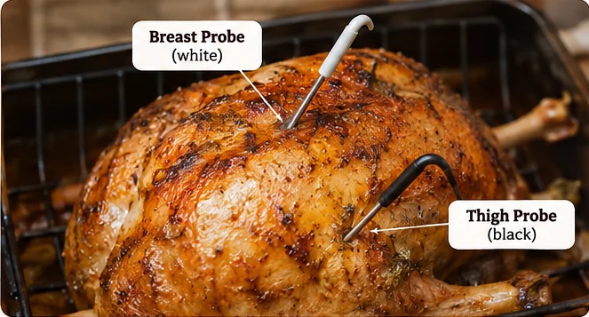
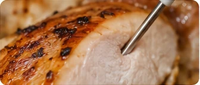
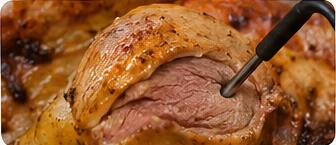
155°F: Early alert to begin checking more closely. 165°F: Minimum safe internal temperature at all required locations. The clock is only an estimate.
This button records the actual finish time, frees the oven, and starts a 35-minute resting countdown.
Follow the sequence from your saved carving video, with photorealistic visual references for each step.
▶ Watch the original carving video

Two cutting boards, a sharp knife, a kitchen fork, tongs, and a serving platter.
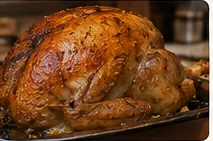
Let the turkey rest before carving. Your planner uses a 35-minute resting target, rather than the video’s 15–20 minutes.
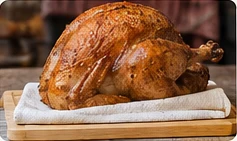
Place a clean kitchen towel beneath the carving board or under the turkey on the board to prevent wobbling. Keep the work surface steady.
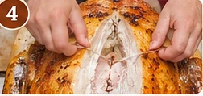
Cut along both sides of the V-shaped wishbone near the neck end of the breast. Expose it, grasp it, and pull it free to make breast removal easier.
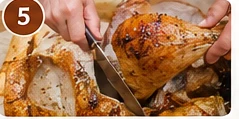
Cut through the skin between each leg and breast. Pull the leg and thigh outward to reveal the hip joint, then cut through the joint rather than the bone.
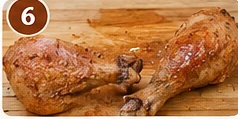
Move the leg quarter to your second cutting board. Find and cut through the joint connecting the thigh and drumstick.
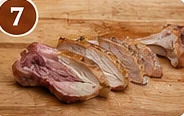
Carefully remove the thigh bone, then slice the dark meat into serving pieces.
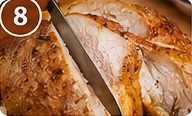
Cut down alongside the breastbone, then use long smooth strokes along the rib cage to release the breast. Avoid sawing. Repeat on the other side.
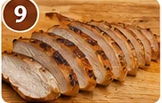
Move each whole breast to the second board. Cut across the grain into even slices.
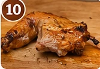
Locate each wing joint and cut through it. Wings can be served whole.
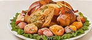
Arrange breast slices, thigh meat, drumsticks and wings on a serving platter. If there is a wait before dinner, keep the turkey at or above 140°F using verified hot holding, or refrigerate promptly and reheat to 165°F.
Images are illustrative, not still frames from the video. Steps follow the instructions and timestamps you provided.
Completely separate from the turkey schedule and shopping list.
Based on your saved Alison Roman gravy method.